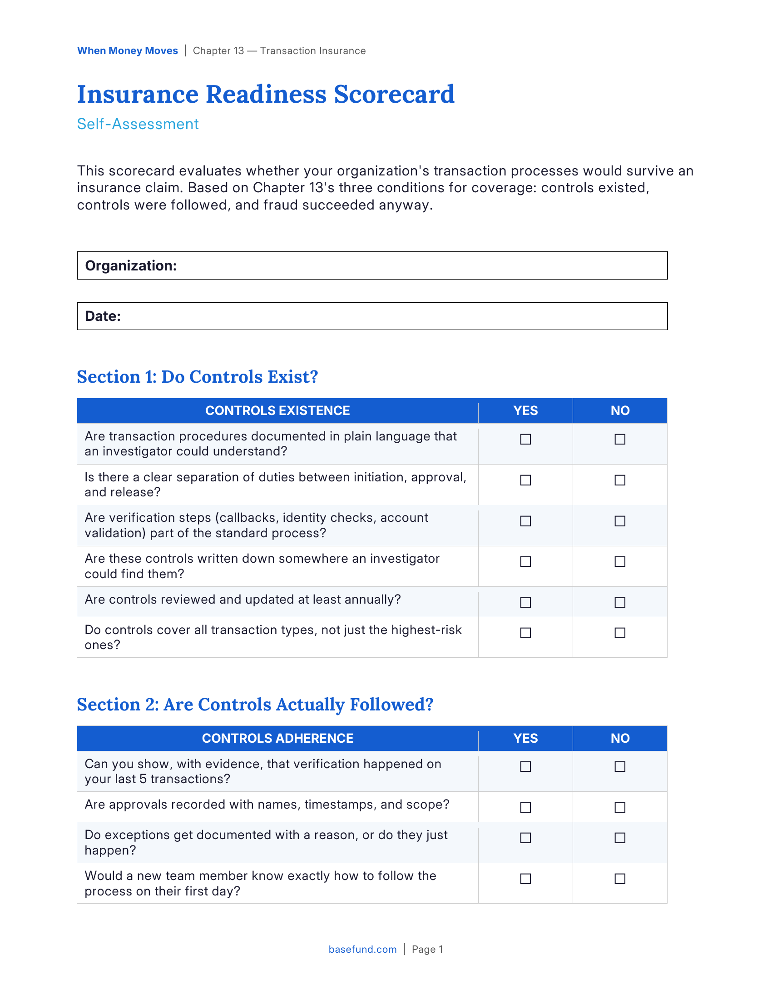

Self-Assessment
Editable Word document (.docx) + print-ready PDF
"If fraud happened today, would your insurance claim survive?"

What You'll Get
An 18-question assessment organized around the three conditions insurers evaluate
Section 1: Do controls exist? Section 2: Are controls followed? Section 3: Is evidence created by default? (6 questions each)
A scoring system mapping to three claim positions: Strong, Vulnerable, or Likely Uninsurable
Priority improvement recommendations to strengthen your claims defensibility
How It Works
Answer each yes/no question based on what you can prove, not what you believe to be true
Score each section separately to see where your coverage position is weakest
Calculate your total score and map it to the claim position scale
Use the results to prioritize improvements that strengthen your defensibility
Who It's For
Risk managers, CFOs, treasury directors, and anyone responsible for the organization's insurance coverage and claims readiness.
The Key Insight
Insurance doesn't pay claims based on whether you had controls. It pays based on whether you can prove controls existed, prove they were followed, and prove the fraud succeeded despite them. The gap between "we have policies" and "we have evidence" is where claims die.
Enter your work email to download the PDF and editable DOCX.
We will never share or sell your personal information.
From the Book
This resource is a companion to Chapter 13: Transaction Insurance of When Money Moves. The chapter provides the full framework — this tool helps you apply it to your own organization.